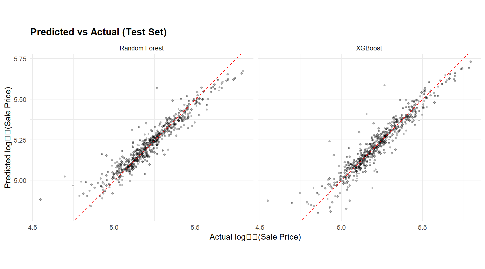
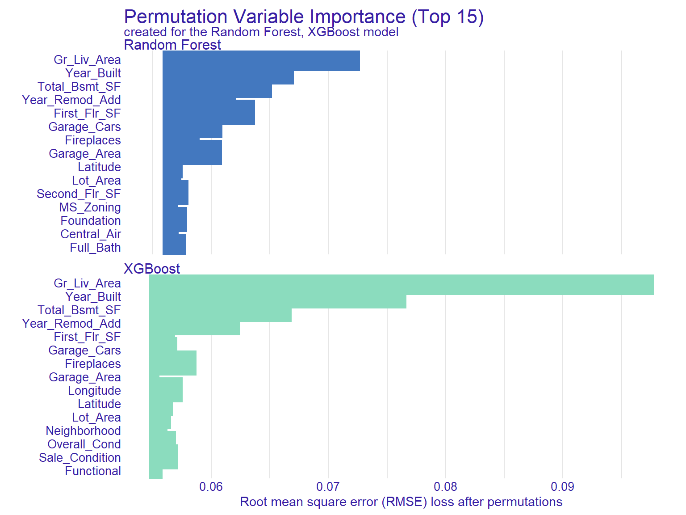
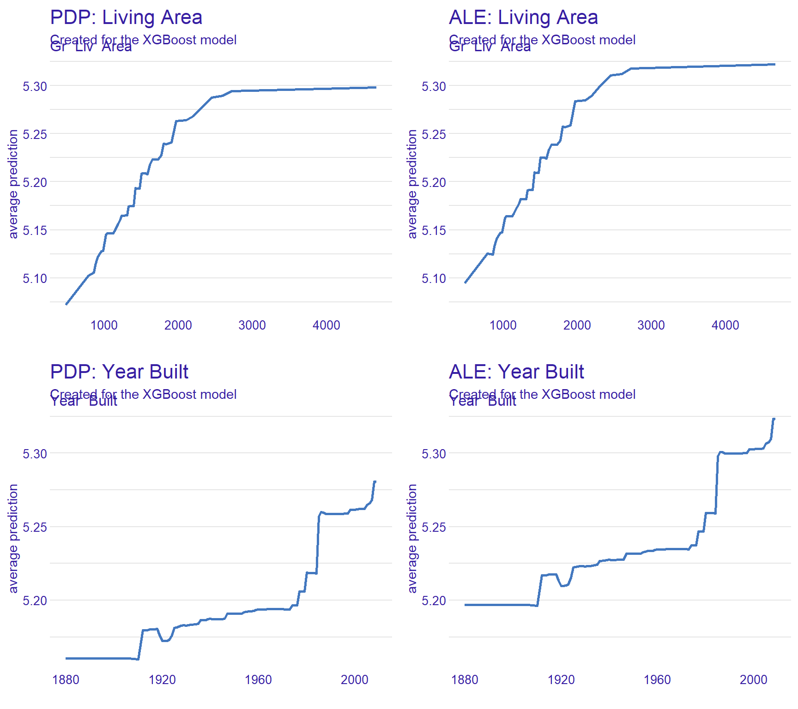
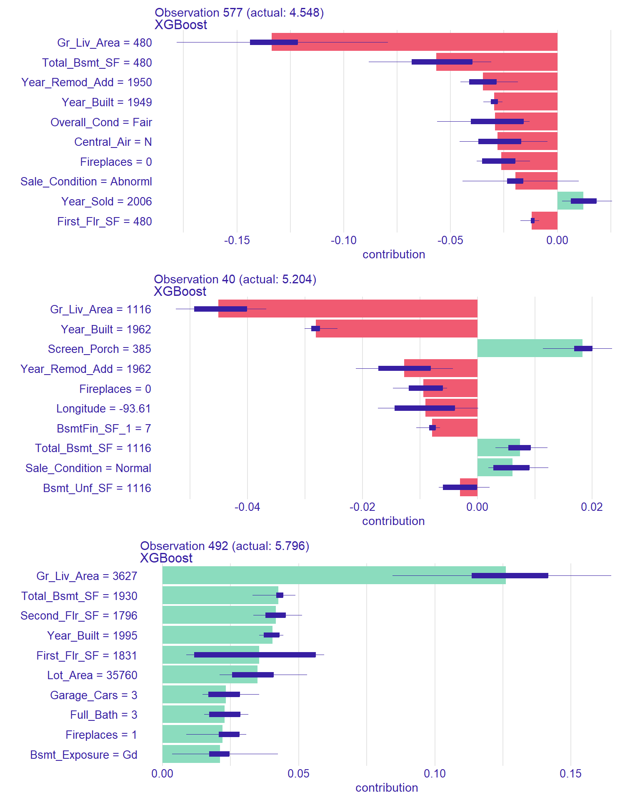

library(tidymodels) # recipes, parsnip, workflows, tune, yardstick
library(modeldata) # ames dataset
library(xgboost)
library(ranger) # fast random forest
library(DALEX) # explainability wrapper
library(ggplot2)
library(dplyr)
library(tibble)
library(knitr)
# ── Parallel backend ─────────────────────────────────────────────────────────
# Use all physical cores minus one (leave one for the OS / RStudio).
# doParallel works on Windows; tune::tune_grid() picks it up automatically.
#library(doParallel)
#n_cores <- max(1, parallel::detectCores(logical = FALSE) - 1)
#cl <- makePSOCKcluster(n_cores)
#registerDoParallel(cl)
#cat(sprintf("Parallel backend registered: %d workers\n", n_cores))
# Also let xgboost / ranger use multiple threads internally for the final fit.
# (Tuning is parallelised across folds via doParallel; final fits are
# parallelised across threads within the model.)
#options(xgboost.nthread = n_cores)
# ranger uses num.threads, set per-call in the model spec if desired.
theme_set(
theme_minimal(base_size = 11) +
theme(
plot.title = element_text(face = "bold", size = 13),
plot.subtitle = element_text(colour = "grey40", size = 10),
legend.position = "bottom"
)
)
palette_ml <- c("#2C3E50", "#E74C3C", "#3498DB", "#2ECC71", "#F39C12")
set.seed(2026)Machine Learning Prediction & Explainability (XAI)
R
Machine Learning
XAI
SHAP
Random Forest
XGBoost
tidymodels
DALEX
End-to-end predictive modelling pipeline with explainable AI using tidymodels and DALEX. Covers data splitting, preprocessing, model training (random forest, xgboost), hyperparameter tuning, performance evaluation (RMSE, R², ROC-AUC), and post-hoc explainability: SHAP values, PDP/ALE plots, ICE curves, and variable importance. Applied to the Ames housing dataset.
0.1 Context
Predictive modelling is central to data science, but in applied research and decision-making contexts, prediction alone is insufficient — stakeholders need to understand why a model makes its predictions. Explainable AI (XAI) methods provide post-hoc interpretability for complex models (Molnar, 2022).
This project demonstrates a complete ML pipeline with integrated explainability:
- Data preprocessing — feature engineering, imputation, encoding.
- Model training — random forest and gradient boosting (xgboost) via the
tidymodelsframework. - Hyperparameter tuning — grid search with cross-validation.
- Performance evaluation — RMSE, R², and residual analysis.
- Global explainability — variable importance, PDP, ALE.
- Local explainability — SHAP values, ICE curves, break-down plots for individual predictions.
The dataset is Ames Housing (De Cock, 2011): 2,930 residential property sales in Ames, Iowa, with 80+ features predicting sale price. Available via the modeldata package.
0.2 Key Results
Note: Theoretical expectations to be refined with actual output.
Expected findings:
- Both models should achieve R² ≈ 0.85–0.92 on the test set, with xgboost typically edging out random forest by 1–2%.
- Top predictors: Overall quality, living area, neighbourhood, garage area, and year built should dominate variable importance.
- PDP/ALE for living area: monotonically increasing, approximately linear in log-price.
- SHAP: should reveal interaction effects (e.g., quality × area) that variable importance alone cannot detect.
0.3 Setup
1 PART A — Data Preparation
data("ames", package = "modeldata")
cat(sprintf("Ames dataset: %d observations × %d variables\n",
nrow(ames), ncol(ames)))Ames dataset: 2930 observations × 74 variables# ── Log-transform sale price ─────────────────────────────────────────────────
ames <- ames |> mutate(log_price = log10(Sale_Price))
# ── Train/test split (stratified by price) ───────────────────────────────────
split <- initial_split(ames, prop = 0.80, strata = log_price)
train <- training(split)
test <- testing(split)
# Drop raw price from train/test — log_price is the target
train <- train |> select(-Sale_Price)
test <- test |> select(-Sale_Price)
cat(sprintf("Training: %d | Test: %d\n", nrow(train), nrow(test)))Training: 2342 | Test: 588# ── Cross-validation folds ───────────────────────────────────────────────────
cv_folds <- vfold_cv(train, v = 5, strata = log_price)1.1 Preprocessing recipe
base_recipe <- recipe(log_price ~ ., data = train) |>
step_novel(all_nominal_predictors()) |>
step_unknown(all_nominal_predictors()) |>
step_dummy(all_nominal_predictors()) |>
step_zv(all_predictors()) |>
step_impute_median(all_numeric_predictors()) |>
step_normalize(all_numeric_predictors())
cat("Recipe steps:\n")Recipe steps:print(base_recipe)2 PART B — Model Training
2.1 Random Forest
rf_spec <- rand_forest(
mtry = tune(),
trees = 500,
min_n = tune()
) |>
set_engine("ranger", importance = "impurity") |>
set_mode("regression")
rf_wf <- workflow() |>
add_recipe(base_recipe) |>
add_model(rf_spec)
# ── Tune hyperparameters ─────────────────────────────────────────────────────
rf_grid <- grid_regular(
mtry(range = c(5, 30)),
min_n(range = c(2, 15)),
levels = 5
)
rf_tune <- tune_grid(
rf_wf,
resamples = cv_folds,
grid = rf_grid,
metrics = metric_set(rmse, rsq)
)
cat("=== Random Forest Tuning Results (top 5) ===\n")=== Random Forest Tuning Results (top 5) ===show_best(rf_tune, metric = "rmse", n = 5) |> kable(digits = 4)| mtry | min_n | .metric | .estimator | mean | n | std_err | .config |
|---|---|---|---|---|---|---|---|
| 30 | 2 | rmse | standard | 0.0650 | 5 | 0.0026 | Preprocessor1_Model05 |
| 30 | 5 | rmse | standard | 0.0651 | 5 | 0.0026 | Preprocessor1_Model10 |
| 30 | 8 | rmse | standard | 0.0654 | 5 | 0.0026 | Preprocessor1_Model15 |
| 30 | 11 | rmse | standard | 0.0656 | 5 | 0.0027 | Preprocessor1_Model20 |
| 23 | 2 | rmse | standard | 0.0657 | 5 | 0.0026 | Preprocessor1_Model04 |
# ── Finalise with best hyperparameters ───────────────────────────────────────
rf_best <- select_best(rf_tune, metric = "rmse")
rf_final <- rf_wf |> finalize_workflow(rf_best) |> fit(train)2.2 XGBoost
xgb_spec <- boost_tree(
trees = 500,
tree_depth = tune(),
learn_rate = tune(),
min_n = tune()
) |>
set_engine("xgboost") |>
set_mode("regression")
xgb_wf <- workflow() |>
add_recipe(base_recipe) |>
add_model(xgb_spec)
xgb_grid <- grid_regular(
tree_depth(range = c(3, 8)),
learn_rate(range = c(-2.5, -1)),
min_n(range = c(5, 20)),
levels = 4
)
xgb_tune <- tune_grid(
xgb_wf,
resamples = cv_folds,
grid = xgb_grid,
metrics = metric_set(rmse, rsq)
)
cat("=== XGBoost Tuning Results (top 5) ===\n")=== XGBoost Tuning Results (top 5) ===show_best(xgb_tune, metric = "rmse", n = 5) |> kable(digits = 4)| min_n | tree_depth | learn_rate | .metric | .estimator | mean | n | std_err | .config |
|---|---|---|---|---|---|---|---|---|
| 20 | 8 | 0.0316 | rmse | standard | 0.0556 | 5 | 0.0024 | Preprocessor1_Model60 |
| 20 | 3 | 0.1000 | rmse | standard | 0.0558 | 5 | 0.0022 | Preprocessor1_Model61 |
| 20 | 6 | 0.0316 | rmse | standard | 0.0560 | 5 | 0.0023 | Preprocessor1_Model59 |
| 20 | 4 | 0.1000 | rmse | standard | 0.0562 | 5 | 0.0021 | Preprocessor1_Model62 |
| 20 | 4 | 0.0316 | rmse | standard | 0.0564 | 5 | 0.0024 | Preprocessor1_Model58 |
xgb_best <- select_best(xgb_tune, metric = "rmse")
xgb_final <- xgb_wf |> finalize_workflow(xgb_best) |> fit(train)3 PART C — Performance Evaluation
# ── Predictions ──────────────────────────────────────────────────────────────
pred_rf <- predict(rf_final, test) |> bind_cols(test |> select(log_price))
pred_xgb <- predict(xgb_final, test) |> bind_cols(test |> select(log_price))
# ── Metrics ──────────────────────────────────────────────────────────────────
metrics_rf <- pred_rf |> metrics(truth = log_price, estimate = .pred)
metrics_xgb <- pred_xgb |> metrics(truth = log_price, estimate = .pred)
perf_table <- bind_rows(
metrics_rf |> mutate(model = "Random Forest"),
metrics_xgb |> mutate(model = "XGBoost")
) |>
select(model, .metric, .estimate) |>
pivot_wider(names_from = .metric, values_from = .estimate)
kable(perf_table, digits = 4,
caption = "Test set performance: Random Forest vs XGBoost")| model | rmse | rsq | mae |
|---|---|---|---|
| Random Forest | 0.0559 | 0.9024 | 0.0381 |
| XGBoost | 0.0546 | 0.9023 | 0.0370 |
Predicted vs actual log(sale price) for both models on the test set.
# ── Predicted vs actual plot ─────────────────────────────────────────────────
pred_all <- bind_rows(
pred_rf |> mutate(model = "Random Forest"),
pred_xgb |> mutate(model = "XGBoost")
)
ggplot(pred_all, aes(x = log_price, y = .pred)) +
geom_point(alpha = 0.3, size = 1) +
geom_abline(slope = 1, intercept = 0, colour = "red", linetype = "dashed") +
facet_wrap(~ model) +
labs(
title = "Predicted vs Actual (Test Set)",
x = "Actual log₁₀(Sale Price)", y = "Predicted log₁₀(Sale Price)"
) +
coord_equal()
4 PART D — Explainability (XAI)
4.1 Create DALEX explainers
# ── Prepare raw test features (no baking) ────────────────────────────────────
# Passing the workflow to DALEX lets the recipe run inside the prediction
# function, so PDP/ALE/SHAP report effects on the original feature scale
# (e.g. Overall_Qual stays a factor, Gr_Liv_Area in square feet).
test_x <- test |> select(-log_price)
test_y <- test$log_price
# ── Prediction function: workflow handles preprocessing internally ───────────
pred_fun_wf <- function(model, newdata) {
predict(model, new_data = newdata)$.pred
}
explainer_rf <- explain(
rf_final, # full workflow, not extract_fit_parsnip()
data = test_x,
y = test_y,
predict_function = pred_fun_wf,
label = "Random Forest",
verbose = FALSE
)
explainer_xgb <- explain(
xgb_final, # full workflow, not extract_fit_parsnip()
data = test_x,
y = test_y,
predict_function = pred_fun_wf,
label = "XGBoost",
verbose = FALSE
)4.2 Variable importance
vi_rf <- model_parts(explainer_rf, type = "variable_importance", N = 500)
vi_xgb <- model_parts(explainer_xgb, type = "variable_importance", N = 500)
plot(vi_rf, vi_xgb, max_vars = 15, show_boxplots = FALSE) +
labs(title = "Permutation Variable Importance (Top 15)")
vi_xgb |>
dplyr::filter(!variable %in% c("_full_model_", "_baseline_")) |>
dplyr::group_by(variable) |>
dplyr::summarise(mean_drop = mean(dropout_loss)) |>
dplyr::arrange(desc(mean_drop)) |>
head(10)# A tibble: 10 × 2
variable mean_drop
<chr> <dbl>
1 Gr_Liv_Area 0.0978
2 Year_Built 0.0766
3 Total_Bsmt_SF 0.0669
4 Year_Remod_Add 0.0625
5 Fireplaces 0.0587
6 Longitude 0.0576
7 Sale_Condition 0.0571
8 Garage_Cars 0.0571
9 Overall_Cond 0.0570
10 First_Flr_SF 0.05694.3 Partial Dependence & ALE
Having identified the dominant predictors via permutation importance, we now examine how the model uses the two strongest features, Gr_Liv_Area (above-ground living area) and Year_Built. Profile-based explanations are computationally expensive, so we restrict the analysis to variables whose contribution to predictive performance is non-trivial — here, the top two account for roughly 32% more importance than the third-ranked predictor.
The two variables were selected to contrast two regimes:
Gr_Liv_Areais the strongest predictor and is largely independent of other features (square footage cannot be inferred from year of construction or neighbourhood). PDP and ALE should therefore agree closely.Year_Builtis the second-strongest predictor and is strongly correlated withYear_Remod_Add(4th in importance) and indirectly with garage age and material quality. This is precisely the regime where PDP — which assumes feature independence — may mislead, while ALE correctly conditions on the local distribution. The comparison below makes this divergence concrete.
# ── Grid for continuous variables ────────────────────────────────────────────
# Quantile-based grid: dense where data is dense, sparse in the tails.
# Avoids the "> 201 unique values" warning and produces smoother plots.
area_grid <- quantile(explainer_xgb$data$Gr_Liv_Area,
probs = seq(0, 1, length.out = 50),
na.rm = TRUE) |>
as.integer() |>
unique()
# ── PDP ──────────────────────────────────────────────────────────────────────
pdp_area <- model_profile(explainer_xgb,
variables = "Gr_Liv_Area",
variable_splits = list(Gr_Liv_Area = area_grid),
type = "partial")
pdp_year <- model_profile(explainer_xgb,
variables = "Year_Built",
type = "partial")
# ── ALE ──────────────────────────────────────────────────────────────────────
ale_area <- model_profile(explainer_xgb,
variables = "Gr_Liv_Area",
variable_splits = list(Gr_Liv_Area = area_grid),
type = "accumulated")
ale_year <- model_profile(explainer_xgb,
variables = "Year_Built",
type = "accumulated")
# Force same y-axis range per variable for fair visual comparison
y_area <- range(c(pdp_area$agr_profiles$`_yhat_`,
ale_area$agr_profiles$`_yhat_`))
y_year <- range(c(pdp_year$agr_profiles$`_yhat_`,
ale_year$agr_profiles$`_yhat_`))
gridExtra::grid.arrange(
plot(pdp_area) + labs(title = "PDP: Living Area") + ylim(y_area),
plot(ale_area) + labs(title = "ALE: Living Area") + ylim(y_area),
plot(pdp_year) + labs(title = "PDP: Year Built") + ylim(y_year),
plot(ale_year) + labs(title = "ALE: Year Built") + ylim(y_year),
ncol = 2
)
4.3.1 Interpretation
PDP shows the average prediction as a function of one feature, marginalising over all other features. It assumes feature independence.
ALE corrects for feature correlations by using conditional distributions. When features are correlated (e.g., living area and number of rooms), ALE is preferred.
Differences between PDP and ALE reveal the impact of feature correlations on the marginal effect estimate.
Our results :
For
Gr_Liv_Area, PDP and ALE are visually identical, both in shape and amplitude. This confirms our methodological expectation: living area is largely independent of other features in the model, so averaging over the marginal distribution (PDP) and conditioning on the local distribution (ALE) produce equivalent results. Both show a strongly concave monotonic increase, with marginal value of an additional square foot collapsing to near zero above ~2,500 sq ft — a classic diminishing-returns pattern.For
Year_Built, PDP and ALE share the same overall shape (flat for pre-1920 homes, modest plateau through 1970, steep climb thereafter), but the ALE has noticeably larger amplitude (~0.125 vs ~0.085 in log10 units). The PDP is “compressed” upward for old homes: by averaging over all values ofYear_Remod_Add— including frequent recent remodels of older houses — it overestimates predictions in the 1880-1920 range. The ALE, by conditioning locally, recovers the genuine penalty on truly old and unrenovated homes. This is the textbook signature of correlated features: PDP underestimates the true marginal effect.Methodological takeaway: when feature correlation is suspected (here,
Year_Built×Year_Remod_Add), ALE should be the default. The fact that PDP and ALE agree on shape but disagree on amplitude is itself a useful diagnostic — it tells us XGBoost has captured the right qualitative pattern but that single-feature marginalisation slightly understates the strength of the effect.
4.4 SHAP values (local explainability)
# ── Select 3 representative observations ────────────────────────────────────
idx <- c(
which.min(test_y), # cheapest
which.min(abs(test_y - median(test_y))), # median
which.max(test_y) # most expensive
)
bd_plots <- lapply(idx, function(i) {
bd <- predict_parts(explainer_xgb,
new_observation = test_x[i, ],
type = "shap",
B = 25)
plot(bd) + labs(subtitle = sprintf("Observation %d (actual: %.3f)", i, test_y[i]))
})
gridExtra::grid.arrange(grobs = bd_plots, ncol = 1)
4.4.1 Interpretation
SHAP values decompose each individual prediction into feature contributions:
- Positive SHAP = the feature pushes the prediction above the baseline (average prediction).
- Negative SHAP = the feature pushes the prediction below baseline.
- Comparing across observations reveals which features matter for different price segments — quality dominates at the high end, while location and condition matter more at the low end.
5 Technical Summary
cat("─── Reproducibility Information ───\n")─── Reproducibility Information ───cat(sprintf("Date: %s\n", Sys.Date()))Date: 2026-05-04cat(sprintf("R version: %s\n", R.version.string))R version: R version 4.4.1 (2024-06-14 ucrt)cat(sprintf("tidymodels version: %s\n", packageVersion("tidymodels")))tidymodels version: 1.2.0cat(sprintf("xgboost version: %s\n", packageVersion("xgboost")))xgboost version: 1.7.8.1cat(sprintf("DALEX version: %s\n", packageVersion("DALEX")))DALEX version: 2.5.2cat(sprintf("Platform: %s\n", sessionInfo()$platform))Platform: x86_64-w64-mingw32/x645.1 References
- Biecek, P., & Burzykowski, T. (2021). Explanatory Model Analysis. CRC Press.
- Breiman, L. (2001). Random forests. Machine Learning, 45(1), 5–32.
- Chen, T., & Guestrin, C. (2016). XGBoost: A scalable tree boosting system. KDD, 785–794.
- De Cock, D. (2011). Ames, Iowa: Alternative to the Boston housing data. Journal of Statistics Education, 19(3).
- Lundberg, S. M., & Lee, S.-I. (2017). A unified approach to interpreting model predictions. NeurIPS, 30.
- Molnar, C. (2022). Interpretable Machine Learning (2nd ed.). christophm.github.io/interpretable-ml-book.